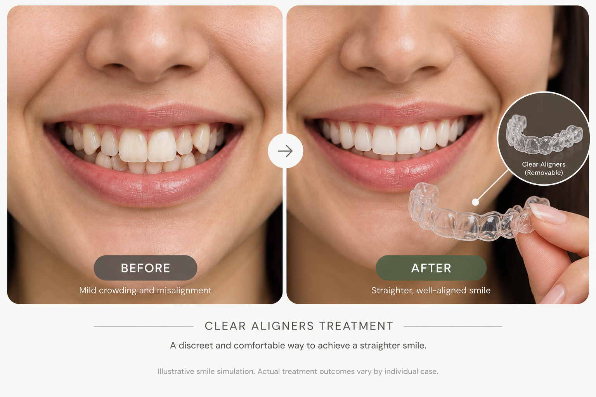
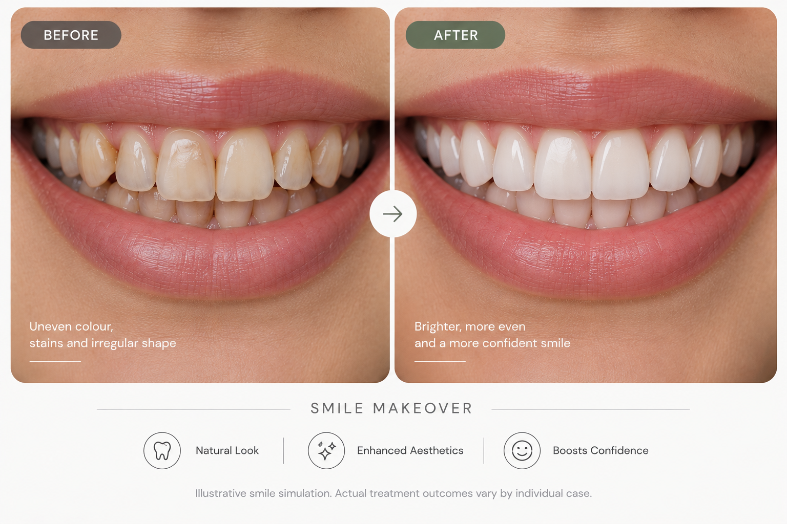

Complete Dental Care, Designed Around You
From routine preventive care to advanced restorative, cosmetic and orthodontic treatments, Jansewa Dental Clinic provides modern dental solutions with a focus on precision, comfort and personalized care.
From routine preventive care to advanced restorative, cosmetic and orthodontic treatments, Jansewa Dental Clinic provides modern dental solutions with a focus on precision, comfort and personalized care.
Discover a modern approach to teeth straightening with clear aligners and digitally planned orthodontic treatment. Your treatment journey begins with precise digital scanning and a personalized plan designed around your smile.
Accurate digital scans help create detailed records for modern orthodontic treatment.
Treatment is planned around your individual dental needs and smile goals.
Clear aligners offer a discreet alternative for selected orthodontic cases.
Jansewa Dental Clinic uses digital scanning technology for selected dental treatments, including crowns and orthodontic treatment such as clear aligners. Digital records can help make treatment planning more precise, convenient and comfortable for patients.
Detailed digital scans create a modern alternative to conventional physical impressions for applicable treatments.
Digital scans provide detailed information that can support accurate treatment planning for crowns and orthodontic procedures.
Digital scanning can eliminate the need for large impression trays in applicable cases, creating a simpler scanning experience.
For applicable treatments, digital scanning offers a modern alternative to conventional physical impressions, helping create a more convenient and comfortable scanning experience.
Traditional impressions use a physical tray and impression material to capture the shape of the teeth.
Digital scanners capture detailed information electronically for applicable crown and orthodontic treatments such as clear aligners.
Explore illustrative smile simulations showing how modern orthodontic and cosmetic treatments can transform the appearance of a smile.

Clear aligners can offer a discreet orthodontic option for selected cases, with treatment planned using digital scanning and modern orthodontic techniques.
Explore Aligners →
Cosmetic dental treatments can be planned around your individual smile goals to create a balanced and natural-looking result.
Explore Smile Makeover →From preventive care and restorative treatments to orthodontics, cosmetic dentistry and tooth replacement, our treatments are planned around your individual dental needs.
At Jansewa Dental Clinic, every treatment is approached with attention to comfort, precision and individual needs. Modern techniques and careful treatment planning help create a more reassuring dental experience.
From digital scanning to advanced dental procedures, our focus is on providing clear guidance and personalized care throughout your treatment journey.
Book an AppointmentCareful treatment planning with attention to quality and precision.
Modern techniques are used where appropriate to help minimize unnecessary discomfort.
Treatment recommendations are planned around your individual dental needs and goals.
We aim to make your treatment options and next steps easy to understand.
Whether you are looking for routine dental care, a restorative treatment, orthodontic solutions or a smile transformation, our team is here to help you understand your options.